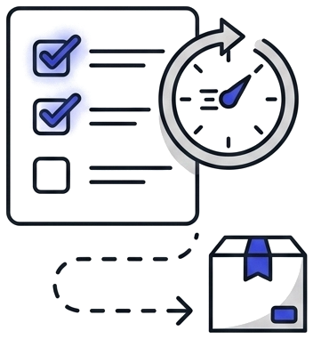
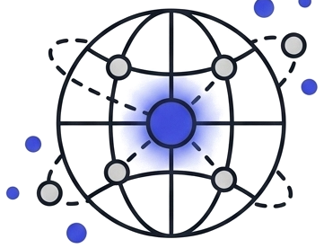
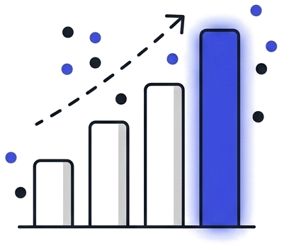

{{ s.nombre }}
{{ s.linea }}
Catálogo
Elige una familia y mira las soluciones que montamos.





{{ famLabel }}
{{ s.linea }}
Lo que se repite muchas veces.
Lo que tiene criterio explicable.
Lo que ya genera datos hoy.